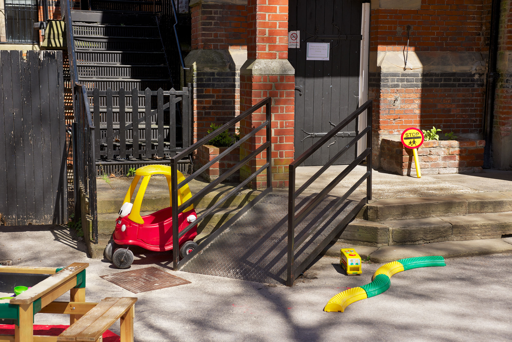

Jonas is 3 years old. In the nursery he has always been comforted by his
key person when he has fallen down.
One day he sees another child who is crying. He puts his arms around the child and tries to comfort her.
Why do you think that Jonas did this?
Developmental benefits
Children who are in inclusive settings are likely to make good progress. This is because
a wide range of play opportunities, equipment and activities will be available. It is also
because adults are thinking about their needs and interests. Adults will try to work
out what play, equipment or materials the child needs. By thinking about a child’s
individual needs, adults may also be in a better position to realise when additional
help is required.
An inclusive setting will work with other professionals, such as speech and language
therapists, to make sure that a child is helped. Inclusive settings may also adapt what
they do to meet children’s needs. They may paint a table white so that a child with
sight problems can see jigsaw puzzles or plates more easily. For a child who needs a
frame to walk with, they may change the layout so that the child can get inside the role
play area.

How does this setting ensure that children with mobility needs are included?
Opportunities to play and socialise
Play is important for children’s overall development. It is also enjoyable and enables
children to practise social skills. Inclusive settings help children to play and be with
others. Adults in inclusive settings think about what help children need so that they
can play. An example of this is when an adult helps a child to play with others or adapts
games so that a child can join in. Where settings show this type of inclusive practice,
children will not only gain social skills through play, but will also learn to express
feelings and emotions.